Bright Access Nursery and Primary School
The Future Is Bright
The Future Is Bright
Bright Access Nursery and Primary School is a leading educational institution committed to nurturing young minds and building a strong foundation for lifelong learning. Established in 2020, the school provides a safe, supportive and stimulating environment where pupils develop academically, morally, socially and creatively.
Guided by our motto, "The Future Is Bright", we strive to inspire excellence, creativity, discipline, leadership and the fear of God in every learner.
Our dedicated and experienced teachers are committed to helping every child succeed.
We nurture children with strong moral values, discipline and the fear of God.
We provide quality education that prepares learners for future success.
We provide a conducive and secure environment for learning and development.
2020
Crèche, Nursery & Primary
Ojo, Lagos
Safe and caring environment for early childhood development.
Interactive learning designed to build strong educational foundations.
Quality education that promotes academic excellence and character development.
Explore memorable moments from our classrooms, cultural celebrations, career day activities, educational excursions, and school environment.
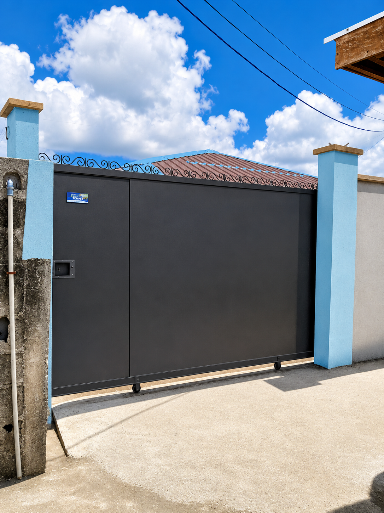
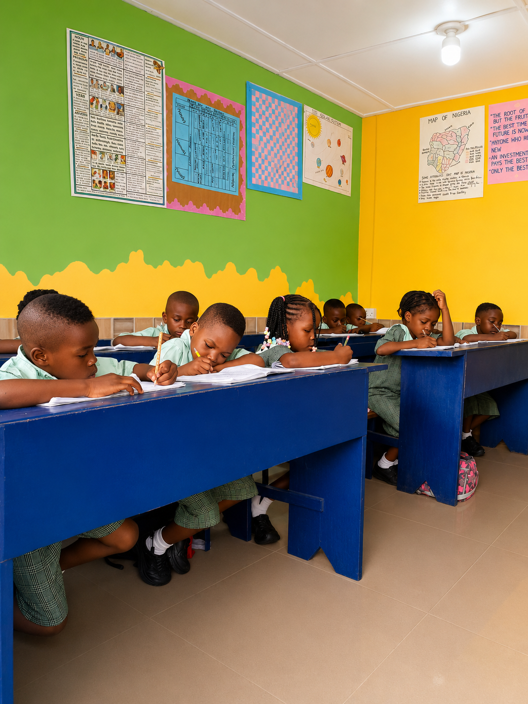
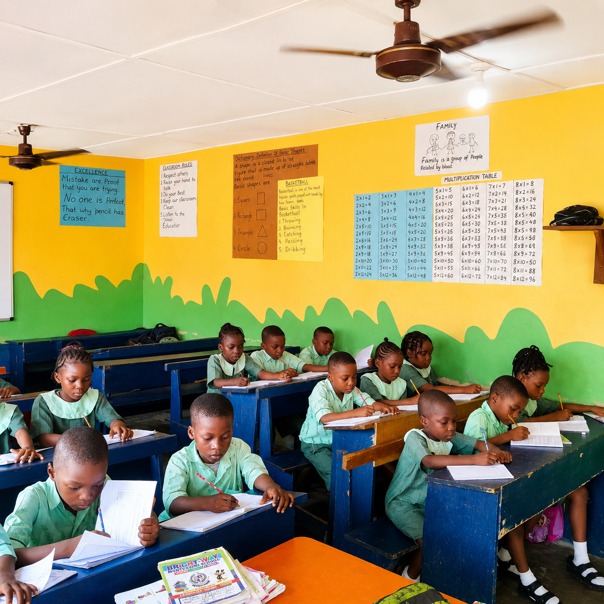
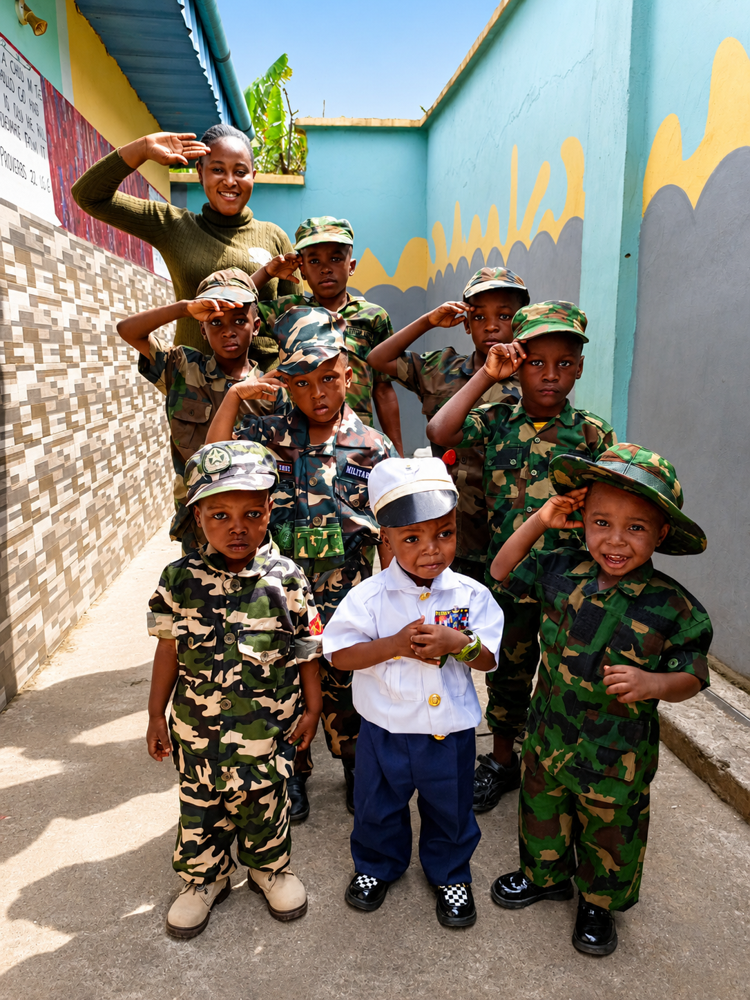
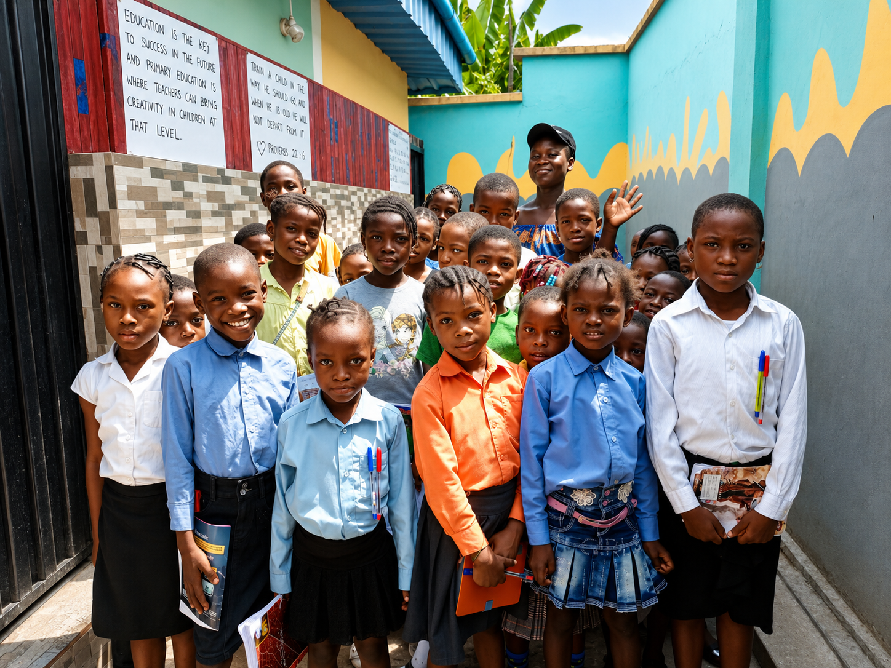
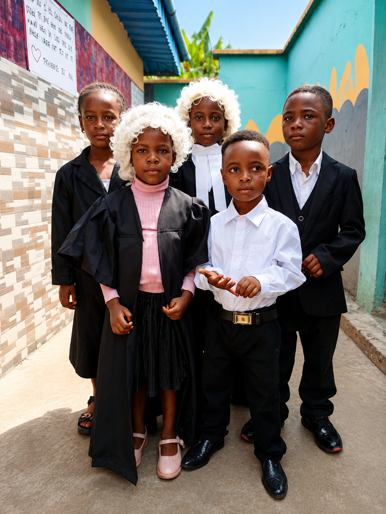
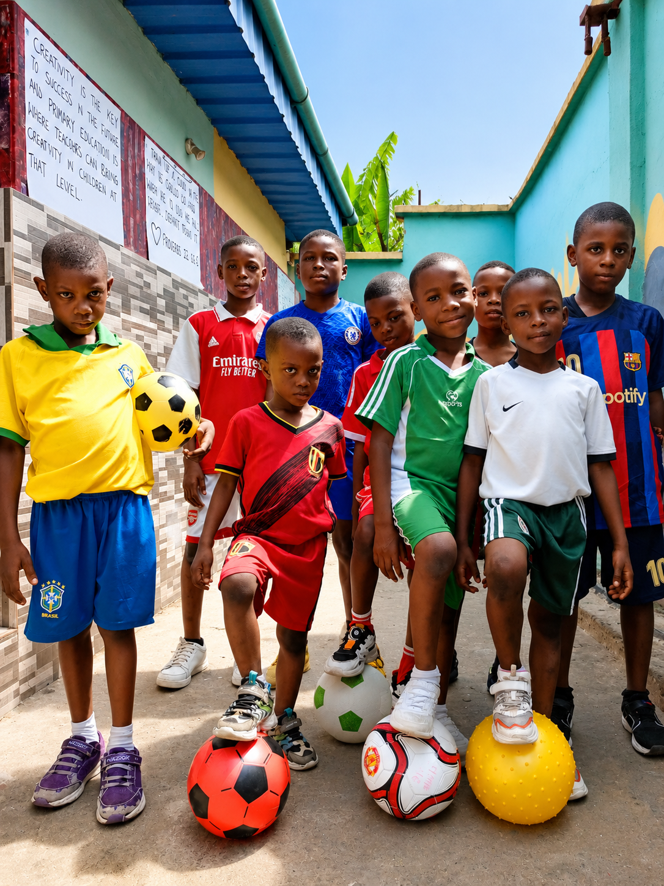
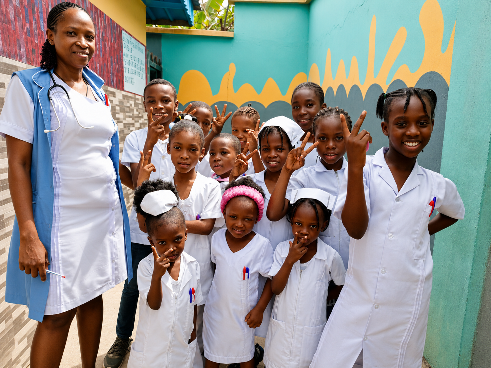
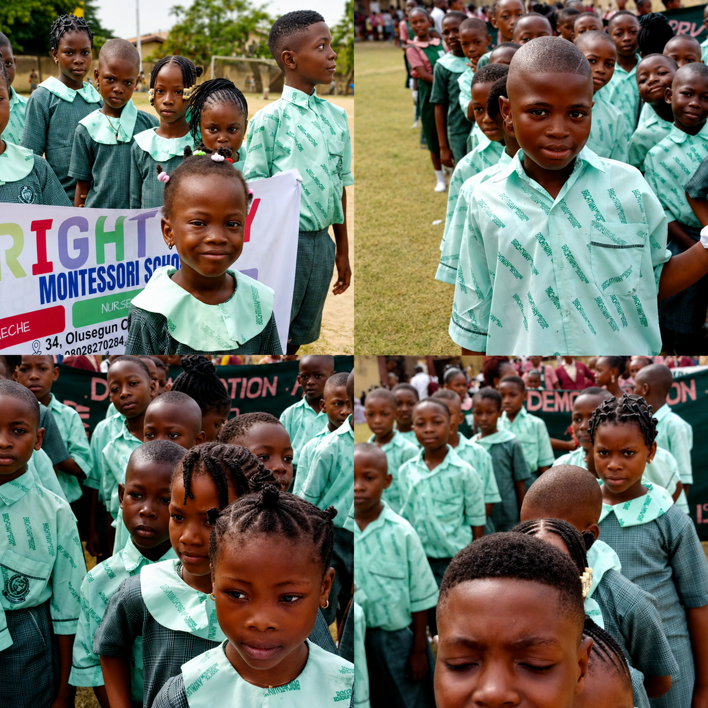
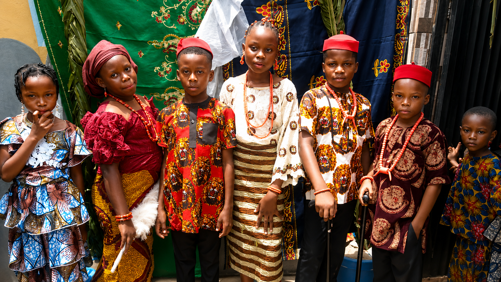
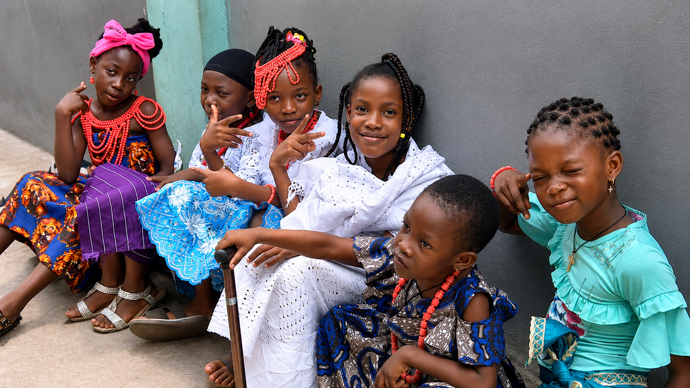
To provide a conducive academic environment for effective teaching and learning through a dedicated and God-fearing team of educators, enabling learners to overcome life's challenges while fostering discipline, self-reliance and academic excellence.
To discover and develop every child's unique potential through godly principles, promoting dignity in labour and producing responsible citizens who uphold positive social values and contribute to a peaceful society.
Address: No. 34 Olusegun Street, Ira/Volks, Ojo, Lagos
Phone: 08028270284 / 07044862887
Email: josces93@gmail.com
Founded: 2020